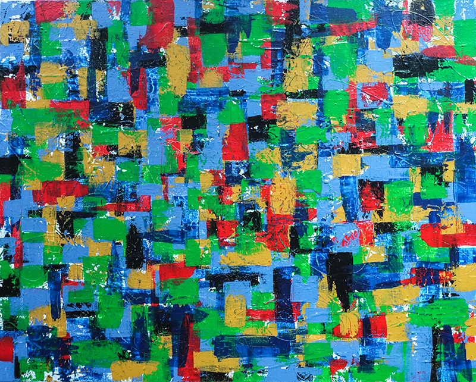
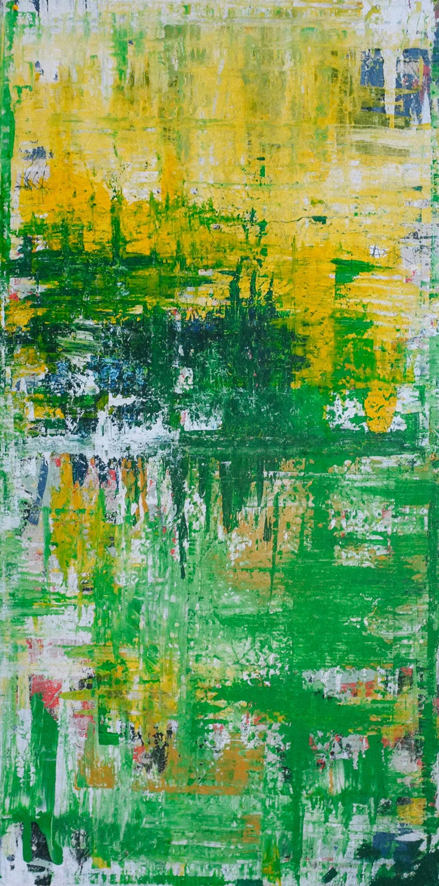
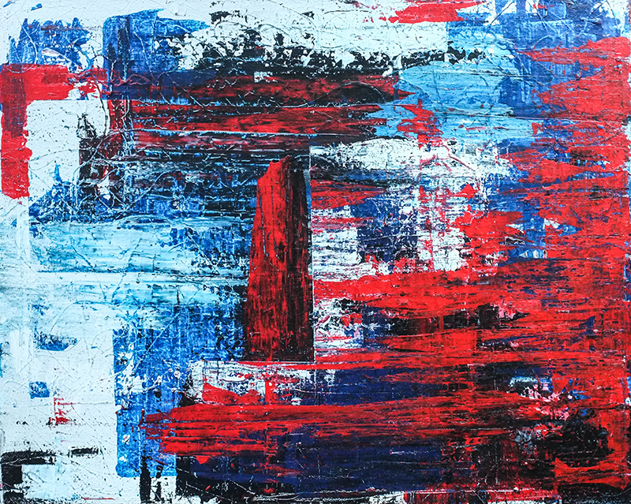
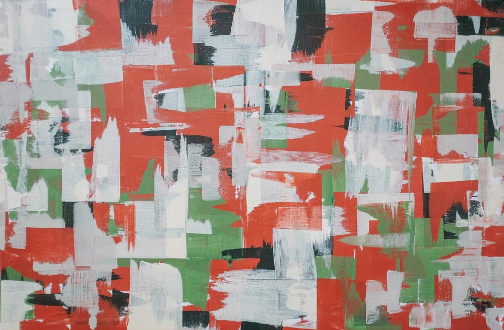
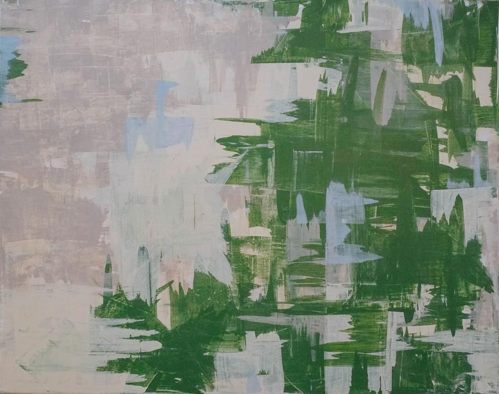
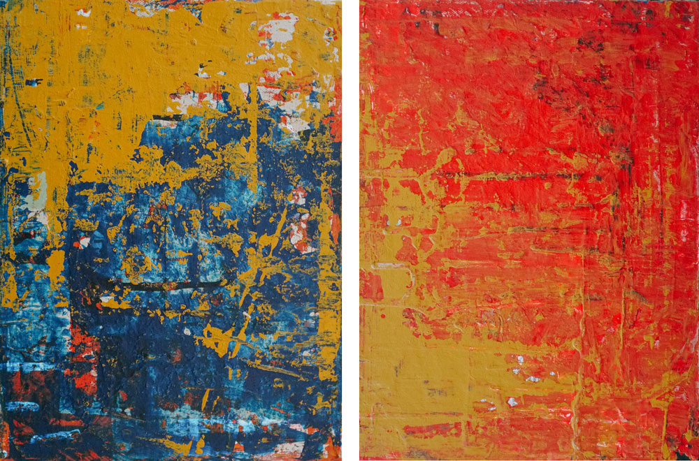

Untitled (2018)
24"x36"; acrylic on canvas

Painting 2 (2016)
24"x48"; oil/acrylic on canvas

American Pastoral (2018)
18"x24"; acrylic on canvas

Agriculture (2013)
24"x36"; oil on canvas

Midwestern Summer (2013)
24"x36", oil on canvas

Painting 4 (2017)
12"x9", acrylic on 2 canvases

Painting 5 (2016)
24"x23", oil on canvas

Untitled (2015)
24"x36", oil on canvas
Jarrett Fuller is a designer, critic, and podcaster based in Baltimore, MD.
He’s currently finishing his MFA in graphic design with a concentration in critical studies from Maryland Institute College Art, where he also teaches in the undergraduate design department; hosts the weekly podcast Scratching the Surface; and maintains a freelance design practice.
As a painter, he’s influenced by Gehard Richter, Michael Cina, and Mark Rothko and is interested in texture, color, pattern, and layers.